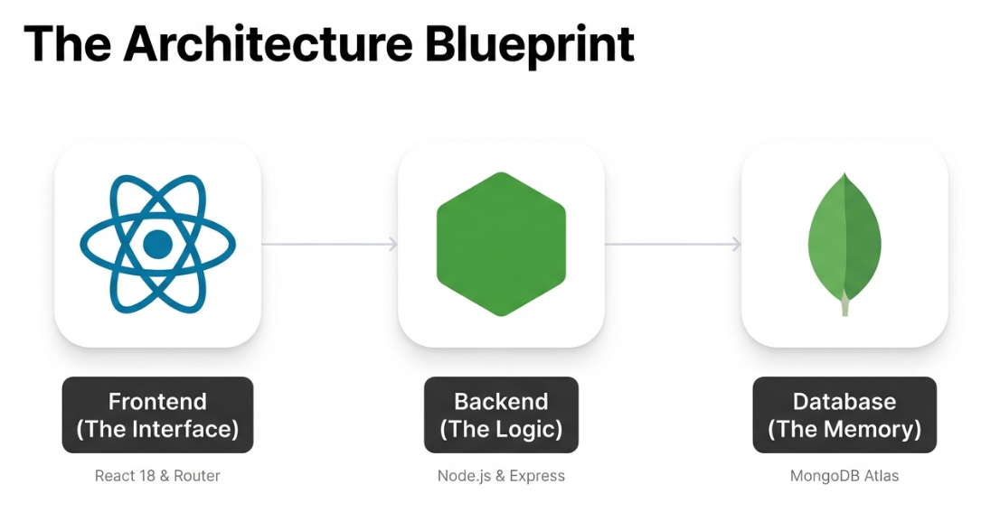

Task Manager is a modern, full-stack web application designed to manage tasks, projects, and team activity in a structured and scalable way. The system was migrated from a legacy architecture and rebuilt using the MERN stack, focusing on clean API design, secure authentication, and a responsive single-page application experience.
The Challenge
The original system suffered from poor scalability, limited visibility into task progress, and a fragmented user experience. Task tracking was inconsistent, collaboration was minimal, and historical data was difficult to audit or analyze.
The challenge was to redesign the system from the ground up while preserving its core functionality, introducing a clear separation between frontend and backend, and implementing a secure, role-based authentication model. The solution needed to be flexible enough to support future features without rewriting the architecture.

The Solution
The application was developed as a full-stack MERN solution. The backend is built with Node.js and Express, exposing a RESTful API secured with JWT-based authentication and role-based access control. MongoDB Atlas is used for persistence, with Mongoose schemas defining the data models and relationships.
The frontend is a React 18 single-page application that communicates with the backend through JSON over HTTP. React Router handles client-side navigation, Axios manages API requests, and global state is handled through context-based patterns. The interface was designed to be minimal, fast, and focused on usability.
Additional system features include task history tracking, real-time notifications, global search across entities, and report generation with CSV export, providing both operational visibility and data analysis capabilities.
Why MERN?
MERN stands for MongoDB, Express, React, and Node.js. It is a powerful stack that allows for full-stack development using a single language: JavaScript. This unification simplifies the development process and allows for seamless data flow as JSON throughout the entire application.
I chose MERN because of its flexibility and the robust ecosystem it offers. React's component-based architecture enables the creation of reusable UI elements, making the interface consistent and easier to maintain. On the backend, Node.js and Express provide a lightweight yet powerful server environment capable of handling concurrent requests efficiently.
What makes it "cool" is its reactivity and modern approach to web development. The combination of a NoSQL database like MongoDB with a dynamic frontend like React allows for rapid prototyping and scalable applications. It represents the modern standard for building fast, interactive user interfaces.
Impact & Results
The final system delivers a clean separation of concerns, improved maintainability, and a significantly better user experience compared to the legacy solution. The modular backend architecture allows new features to be added with minimal impact on existing functionality.
From an academic and engineering perspective, the project demonstrates the practical implementation of modern web development concepts such as RESTful APIs, authentication middleware, database modeling, and SPA deployment using cloud-based infrastructure.